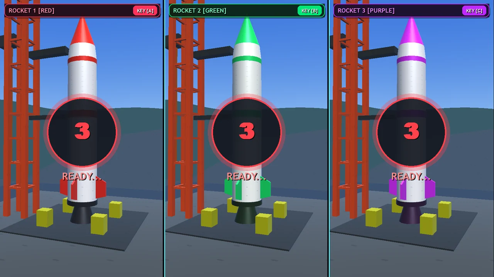
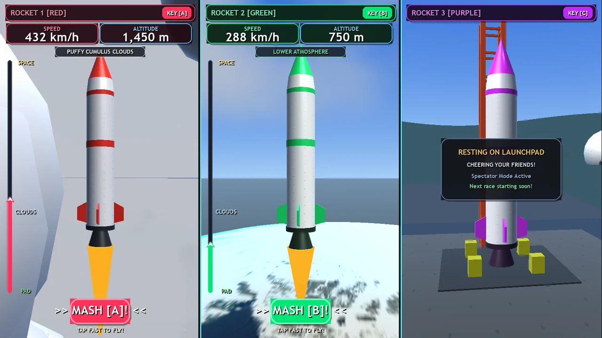

Identify each lane
Red, green and purple tie the rocket, input prompt and altitude display to one player position.
Three lanes, three identities, one shared challenge.
Explore the storyShow individual readiness and progress without fragmenting the spectator view.
Red, green and purple lanes each pair a rocket with an input prompt and altitude readout. The staged prototype capture contrasts active ascent with a waiting launchpad state.
Red, green and purple tie the rocket, input prompt and altitude display to one player position.
The staged prototype view shows two rockets ascending and a third still on the launchpad. The displayed values are demonstration data.
Explore the complete compositions and interface states. Select any image for a closer look.
04 / PROJECT IMAGES
Select a view to explore.
Join screen: each player has a color, rocket and dedicated input.

Synchronized countdown prepares all three lanes for launch.

Separate speed and altitude indicators give each player immediate feedback. The unused lane has an explicit spectator state.

Existing prototype capture showing finish feedback and the spectator state; displayed results are test content.
Structure, interaction and visual decisions that give the work its character.
RoleContribution awaiting confirmation
AssetsPrivate evidence draft. Individual contribution and public use are unverified. File presence does not establish personal authorship or original modeling. Supplied, licensed and AI-assisted components require separate credit. Existing scripted capture only; no deployment, participant count, original-modeling or performance claim.
StatusPrivate evidence draft; contribution and final delivery unverified